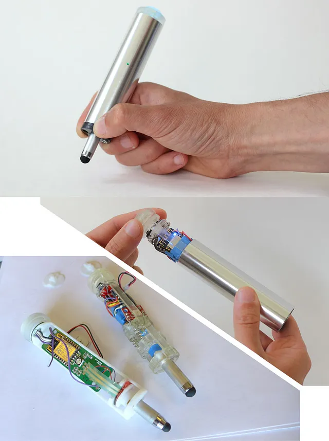

Published on UX Collective on April 2024. - LINK

Abstract:
Hardware interaction design (HID) is a crucial yet often overlooked discipline in the tech industry, bridging the gap between digital interfaces and physical devices. HID professionals are involved throughout the product lifecycle, from early exploration and concept ideation to refinement of form, materials, and behaviors. They act as innovation catalysts, exploring emerging technologies and new interaction paradigms. During product definition, HIDs play a key role in determining features and user-centered elements, collaborating closely with product managers. In the productization phase, they design detailed interactions, gestures, and feedback systems, often creating prototypes to test and refine the user experience. Post-launch, HIDs analyze user data and observations to improve existing features and inspire future innovations. As technology becomes increasingly embedded in our environments, the need for skilled hardware interaction designers grows. Their expertise is crucial in creating intuitive, seamless, and meaningful interactions between users and physical products, ultimately ensuring that technology remains human-centered and well-designed.